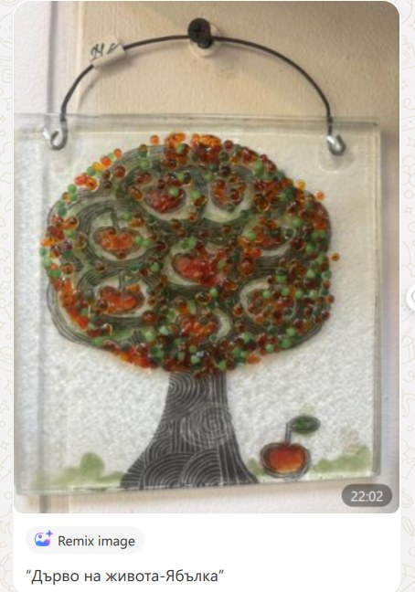

Снимка скоро
Бухал
Символ на мъдрост и благополучие.
ПоръчайАвторски картини от цветно стъкло
Всяко Дърво на живота е изработено на ръка, стъкълце по стъкълце — с мисъл за здраве, любов и благополучие в дома ви.
Без рамка
Рисувани стъклени пана с професионални бои за стъкло и начупени цветни стъклца. Всяко е с размер 12 × 12 см и цена 20 €.
Метална, във формата на кобилица, завършваща със спирала. Символизира развитие и желание за извисеност, което затваря кръга.
Символ на мъдрост и благополучие.
ПоръчайПредвестник на есента. Символизира упоритостта на този, който събира плодове за зимата.
ПоръчайЗа да си кажеш „Ще пречупя карък и ще започна без страх отново!“. Подарява се за късмет и безстрашие.
ПоръчайПодарява се за нежност, вярност, приятелство, игри и усмивки.
ПоръчайЗа любов, вярност и надежда — и за да не забравяш себе си и да се обичаш.
ПоръчайОсвен червено има и син цвят — връзка с небето и със силния мъжки пол.
Поръчай
Освен нарисуваната символика има и 8 узрели ябълкови плода. Числото 8 е символ на успех и безкрайност.
ПоръчайТъмен ствол и червено-оранжева корона, събрала есенния урожай.
ПоръчайУсещане за идването на лятото, топлината, морските почивки и плажовете.
ПоръчайПредстои добавяне на още пана.
С рамка

Рамка: Платина
Семейно дърво на живота
80 € ≈ 156,47 лв.
Изработено върху стъкло със специални професионални бои и цветни стъкла. Двойно темперирано в пещ за стъкло — за здравина и дълбок, траен блясък.
Всяка картина е уникална — възможни са фини разлики спрямо снимките.
Всяка е с рамка. Вариантите на рамката за „Дърво на плодородието“ са по-долу.
Предлага се в четири размера.
Червена корона върху тънки клони, в платинена рамка.
ПоръчайМасивна ретро рамка. Дърво с широки клони и дебел ствол, стъпило здраво на земята. Усещане за зрялост, сила и непоклатимост.
ПоръчайСъс златна рамка и закопчалка. Носи радост, топлина и много цвят в дома и офиса. Усещане за изисканост, прецизност и блестяща чистота.
ПоръчайВърху керамична плочка, в дървена рамка със златен кант.
ПоръчайСпираловиден ствол и корона от червени и зелени стъкла, в платинена рамка.
ПоръчайЦветна корона върху светло стъкло, в златна рамка.
ПоръчайОсвен показаното, Лъки създава и по поръчка:

Само по поръчка
Подарък, който остава за цял живот. Върху картината се изписват имената на младоженците, а под дървото застават двамата — нежен символ на семейство, което расте и дава корен.
Рамки
Рамката е част от картината. Изберете тази, която пасва на дома ви — важи и за сватбените дървета.
Скоро
Стъклените пластики на Лъки ще се появят тук. Ако търсите конкретна, пишете ни във формата за поръчка.
Скоро
Бижутата от цветно стъкло са в подготовка. Следете сайта или ни пишете за повече информация.
Как се ражда една картина
Галерия
Лъки е и собственик на галерия Artgifts.bg на ул. „Гурко“ в София. Елате да видите картините на живо — светлината в стъклото се усеща най-добре отблизо.
Към artgifts.bg ↗Поръчка
Попълнете формата и ще се свържем с вас за уточняване на детайли, плащане и доставка.